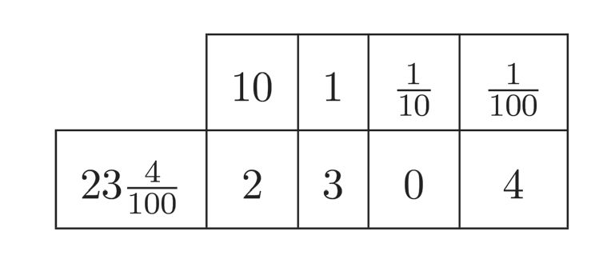
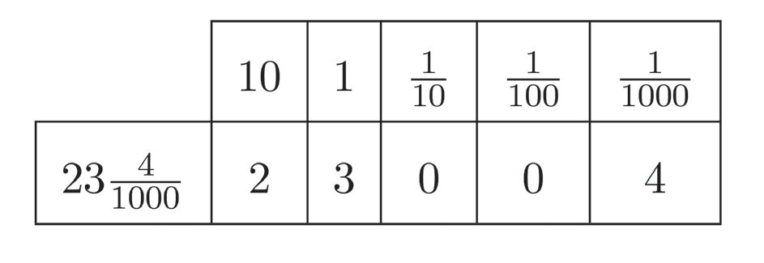
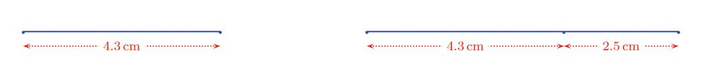
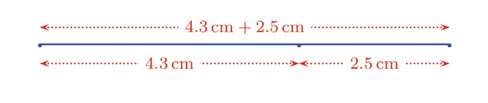
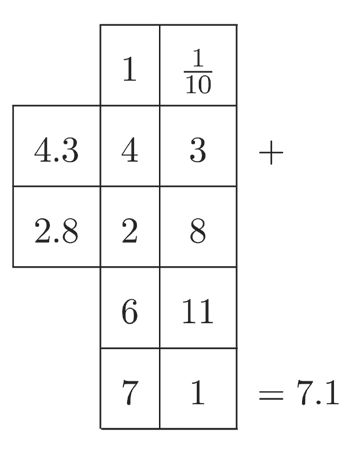
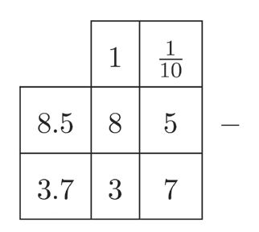
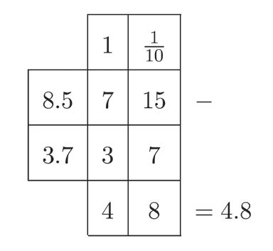

Decimal Forms
Decimal places
We have seen in class 5 how various
measures can be written as fractions
and as their decimal forms (The lesson
Measure Math).
For example, the length of a pencil can
be said in different ways:
•
5 centimetres 7 millimetres
•
7 centimetres
5 10
•
5.7 centimetres
We can write other measures also like this:
7 litres = 5.7 litres
5 10
7 kilograms = 5.7 kilograms
5 10
We can drop all references to measures and simply say that 5.7 is the decimal
7.
form of the number 5 10
7 = 5.7
5 10
29
Similarly, 4.29 is the decimal form of 4 100
29 = 4.29
4 100
We must note another thing here. We write natural numbers using ones, tens,
hundreds and so on. For example:
247 = 2 hundreds + 4 tens + 7 ones
What about 247.3 ?
First we split it as the sum of a whole number and a fraction, as
3 = 247 + 3
247.3 = 247 10
10
3 here can be written as
The 10
3 1 1 1
10 10 10 10
That is, 3 tenths. So, we can write 247.3 in terms of hundreds, tens, ones and tenths:
247.3 = 2 hundreds + 4 tens + 7 ones + 3 tenths
How do we split 247.39 like this?
First, we write it as
39 = 247 + 39
247.39 = 247 100
100
39 as
Then, we can split 100
39 30 9 30 9 3 9
100
100
100 100 10 100
3 here is 3 tenths; and 9 is 9 hundredths. So,
The 10
100
247.39 = 2 hundreds + 4 tens + 7 ones + 3 tenths + 9 hundredths
In general,
In the decimal form of a number, the dot separates the whole number
part and the fractional part. Digits to the left of the dot show the
multiples of ones, tens, hundreds and so on; the digits to the right show
the multiples of tenths, hundredths, thousandths and so on.
For example, the two numbers used in the above examples can be split according to
place value like this:
Split the numbers below according to place value:
(i) 4.5
(ii) 4.57
(iii) 4.572
(iv) 45.72
(v) 457.2
Let's look at the decimal form of some measures again. For example, what is the decimal
form of 23 metres and 40 centimetres?
40 metres = 23.40 metres
23 metres 40 centimetres = 23 100
Taking only the numbers, we have
40 = 23.40
23 100
40 here as
We can write the 100
40 = 4
100 10
So, we get
40
4
=
23=
100 23 10 23.4
This means
23.40 = 23.4
We can see this using place values also:
Thus we can write 23 metres and 40 centimetres in two different ways:
23 metres 40 centimetres = 23.40 metres
23 metres 40 centimetres = 23.4 metres
What about 23 metres and 4 centimetres?
4 of a metre; that is 4 metre.
4 centimetres is 100
100
4 metres
23 metres 4 centimetres = 23 100
69
Page 70
Figure fig_ch05_p070_01 (Page 70)

Figure fig_ch05_p070_02 (Page 70)

Figure fig_ch05_p070_03 (Page 70)
Standard VI - Mathematics
4 according to place value:
We can split 23 100
4 = 2 tens + 3 ones + 4 hundredths
23 100
4 ?
So what is the decimal form of 23 100
4 = 23.04
23 100
In our problem of lengths,
23 metres 4 centimetres = 23.04 metres
What about 23 metres and 4 millimetres?
4 metres. So
4 millimetres means 1000
4 metres
23 metres 4 millimetres = 23 1000
4 according to place value?
How do we split 23 1000
4 as
So, we can write the decimal form of 23 1000
4 = 23.004
23 1000
In terms of lengths
23 metres 4 millimetres = 23.004 metres
Now try to write 4 kilograms and 55 grams as kilograms in decimal form.
Convert the measures below into the measures specified, using fractions and
decimal forms.
Measure
Fractional form
Decimal form
4 metres 30 centimetres
30 metres
4 100
4.3 metres
4 metres 3 centimetres
... metres
... metres
4 metres 3 millimetres
... metres
... metres
3 kilograms 200 grams
... kilograms
... kilograms
3 kilograms 250 grams
... kilograms
... kilograms
3 kilograms 25 grams
... kilograms
... kilograms
30 kilograms 250 grams
... kilograms
... kilograms
10 litres 750 millilitres
... litres
... litres
10 litres 75 millilitres
... litres
... litres
10 litres 705 millilitres
... litres
... litres
100 litres 750 millilitres
... litres
... litres
71
Page 72
Figure fig_ch05_p072_01 (Page 72)
Standard VI - Mathematics
Decimals and fractions
We have seen how measures of various kinds, given as decimals, can be converted to
fractions.
For example,
3 centimetres
7.3 centimetres = 7 10
We can also write it as millimetres
1 centimetre means 10 millimetres; so
7 centimetres = 70 millimetres
3 centimetres?
What about 10
3
1
10 is three 10
1 centimetres is 1 millimetre;
And 10
3
so,
10 centimetres = 3 millimetres
Now we can write
3 centimetres
7.3 centimetres = 7 10
= 73 millimetres
1 centimetres
We can change this again. 73 millimetres mean 73 of 10
73 centimetres
73 millimetres = 10
In terms of just numbers without using measures, this means
73
7.3 = 10
Similarly, how do we write 7.31 metres as a fraction?
First, we write it as a whole number and a fraction, as seen in class 5:
31 metres
7.31 metres = 7 100
72
Page 73
Figure fig_ch05_p073_01 (Page 73)
Decimal Forms
1 metre is 100 centimetres, so that
7 metres = 700 centimetres
1 metres means 1 centimetre,
On the other hand, since 100
31
100 metres = 31 centimetres
Thus
31 metres
7.31 metres = 7 100
= 731 centimetres
If 731 centimetres is converted back to metres,
731 metres
731 centimetres = 100
Thus,
731 metres
7.31 metres = 100
In terms of numbers alone
731
7.31 = 100
In this way, how do we write 7.319 litres as a fraction?
319 litres
7.319 litres = 7 1000
In this
7 litres = 7000 millilitres
319
1000 litres = 319 millilitres
From this we get
7.319 litres = 7319 millilitres
Converting back to litres
7319 litres
7319 millilitres = 1000
In all the examples above, we converted numbers in decimal form to fractions:
73
7.3 = 10
731
7.31 = 100
7319
7.319 = 1000
What change do you see in the denominators of the fractions, as the number of digits
after the decimal point increases?
Can you say the fractional form of the decimal 12.03?
What is the numerator of the fraction?
And the denominator?
In 12.03, how many digits are there after the decimal point?
12.03 = 1203
100
On the other hand, what is the decimal form of 1203
1000 ?
Looking at the denominator, can you say how many digits after the decimal point does
it have?
1203 = 1.203
1000
(1) The decimal form of some numbers are given below. Write each of them as a
fraction with denominator 10, 100 or 1000.
(i) 3.7
(ii) 3.07 (iii) 30.7 (iv) 3.72 (v) 37.2
(vi) 3.072
(2) Write the decimal form of the fractions given below.
51
(i) 10
74
(ii) 513
10
513 (iv) 513 (v) 5130
(iii) 100
1000
1000
(vii) 30.72
Page 75
Figure fig_ch05_p075_01 (Page 75)

Figure fig_ch05_p075_02 (Page 75)

Figure fig_ch05_p075_03 (Page 75)
Decimal Forms
Addition and subtraction
A line 4.3 centimetres long was drawn and then extended by another 2.5 centimetres:
How many centimetres long is the line now?
We must add 4.3 centimetres and 2.5 centimetres.
We can do this in several ways.
First, we can convert these to centimetres and millimetres.
4.3 centimetres = 4 centimetres 3 millimetres
2.5 centimetres = 2 centimetres 5 millimetres
And add the centimetres and millimetres separately.
4 centimetres + 2 centimetres = 6 centimetres
3 millimetres + 5 millimetres = 8 millimetres
The length of the line is
6 centimetres 8 millimetres
Then we can convert back to centimetres.
68 centimetres
6 centimetres 8 millimetres = 10
= 6.8 centimetres
Or, first we can write the lengths in millimetres.
4.3 centimetres = 43 millimetres
2.5 centimetres = 25 millimetres
75
Page 76
Figure fig_ch05_p076_01 (Page 76)
Standard VI - Mathematics
Now we need only add 43 and 25; and this too can be done in several ways.
For example,
43 + 25 = 40 + 20 + 3 + 5 = 68
Thus the length of the line is 68 millimetres.
This we can write as centimetres in decimal form.
68 millimetres = 6 centimetres 8 millimetres
= 6.8 centimetres
Another method is to remove the measures and write the numbers as fractions.
43
4.3 = 10
25
2.5 = 10
And these fractions we can add like this:
43 25 43 25 68
10 10
10
10
This fraction can be written in decimal form as
68
10 = 6.8
Now, we can add the measures and say the length of the line is 6.8 centimetres.
What if we want to add 4.3 centimetres and 2.8 centimetres?
We can add by changing the lengths to millimetres:
4.3 centimetres = 43 millimetres
2.8 centimetres = 28 millimetres
Now, we need only add 43 and 28. It can be done like this:
43 + 28 = 40 + 20 + 3 + 8 = 60 + 11 = 71
Thus the length of this line is 71 millimetres.
This we can write in centimetres as a decimal:
71 millimetres = 7 centimetres 1 millimetres
= 7.1 centimetres
76
Page 77
Figure fig_ch05_p077_01 (Page 77)

Figure fig_ch05_p077_02 (Page 77)
Decimal Forms
We can do it by converting just the numbers to
fractions.
43
4.3 = 10
28
2.8 = 10
Place values
and addition
We can add numbers in
decimal form without
converting to fractions,
using place values. For
example, see how calculate
4.3 + 2.8
Finally, convert the fraction back to the decimal
form.
71
10 = 7.1
The length of the line is 7.1 centimetres.
Another problem:
A jar contains 3.5 litres of oil and 6.25 litres more is poured into it. How much oil
does the jar contain now?
First, let's convert just the numbers to fractions:
35
3.5 = 10
625
6.25 = 100
How do we add these?
35 also as a fraction with denominator 100:
We can write 10
35
35 # 10
10 = 10 # 10
350
= 100
Now we can add like this:
35 + 625
350 + 625
10 100 = 100 100
+ 625
= 350100
975
= 100
We now convert this fraction back to the decimal form:
975
100 = 9.75
Thus the jar contains 9.75 litres of oil now.
Now look at this problem:
A person bought 2.5 kilograms of rice and 3.125 kilograms of vegetables. What is
the total weight?
This also we do with fractions
25
2.5 = 10
3125
3.125 = 1000
25 to a form
To add these, we change 10
with denominator 1000.
25
25 # 100
10 = 10 # 100
2500
= 1000
(1) Anu made an 8.5 metre long festoon and Sarah made a 7.8 metre long one to
decorate their classroom for the school anniversary. What is the total length of
the festoon they made?
(2) Amal needs 2.25 metres of cloth and Sagar, 1.85 metres for school uniform.
How many metres of cloth in all?
(3) A tin weighs 2.85 kilograms and it is filled with 12.5 kilograms of rice. What is
the total weight?
(4) Bakul walks 2.25 kilometres in the morning and 1.5 kilometres in the evening
everyday. What is the total distance she walks each day?
(5) Two small bottles contain 0.850 litre and 0.375 litre of honey. If both the
bottles are emptied into a large bottle, how much honey does it contain?
Next let's look at some instances where we have to subtract measures. See this problem:
From an 8.5 centimetres long eerkkil, a 3.2 centimetres long piece is broken off.
What is the length of the remaining piece?
Thinking in terms of numbers alone, what we need is to subtract 3.2 from 8.5.
We change the numbers to fractions.
85
8.5 = 10
32
3.2 = 10
Now we can subtract:
85 − 32
85 − 32
10
10 10 =
One way to subtract 32 from 85 is this:
85 − 32 = (80 − 30) + (5 − 2)
= 50 + 3
= 53
79
Page 80
Figure fig_ch05_p080_01 (Page 80)

Figure fig_ch05_p080_02 (Page 80)

Figure fig_ch05_p080_03 (Page 80)
Standard VI - Mathematics
So we get
85 − 32
53
10 10 = 10
Finally, we switch back to decimals:
53
10 = 5.3
Thus the length of the remaining piece of eerkkil
is 5.3 centimetres.
What if we change the problem like this?
Place value and subtraction
We can subtract numbers in decimal
form without changing them to
fractions. For example, consider
8.5 − 3.7
To do this, we first write like this
From an 8.5 centimetres long eerkkil, a 3.7
centimetres long piece is broken off. What is
the length of the remaining piece?
We start as before by converting the decimals to
fractions:
Since 7 tenths cannot be subtracted
from 5 tenths, we rewrite this as
shown below and proceed:
85
8.5 = 10
37
3.7 = 10
And then subtract
85 − 37
85 − 37
10 10 = 10
We have seen in earlier classes that subtractions like 85 − 37 can be done in several
different ways. For example,
85 − 37 = (85 − 35) − 2 = 50 − 2 = 48
85 − 37 = (87 − 37) − 2 = 50 − 2 = 48
85 − 37 = (85 − 40) + 3 = 45 + 3 = 48
Anyway, we find
85 − 37
48
10 10 = 10
Changing back to decimals,
48
10 = 4.8
80
Page 81
Figure fig_ch05_p081_01 (Page 81)
Decimal Forms
The remaining piece of eerkkil is 4.8 centimetres long.
Look at another problem:
There is 15 kilograms of rice in a sack. 4.25 kilograms from this is put in a bag.
How much rice remains in the sack?
Thinking just in terms of numbers, what we have to do is subtract 4.25 from 15.
We first write 4.25 as a fraction:
425
4.25 = 100
How do we write 15 as a fraction with denominator 100?
Recall the section Fraction as division of the lesson One Fraction Many Forms.
15 # 100
1500
15 = 15
1 = 1 # 100 = 100
Now can't we subtract?
1500 − 425 = 1500 − 425
100
100 100
(1) From a rod 14.7 metres long, a piece 7.75 metre long is cut off. What is the
length of the remaining piece?
(2) There was 38.7 kilograms of rice in a sack and 12.350 kilograms of this is used
up. How much rice remains in the sack?
(3) The perimeter of a rectangle is 24 centimetres and the length of one side is
6.4 centimetres. What is the length of the other side?
(4) There was 2.50 litres of oil in a bottle and 0.475 litres of this was used for
cooking . How much oil is left in the bottle?
(5) What number we must add to 14.32 to get 16.43?